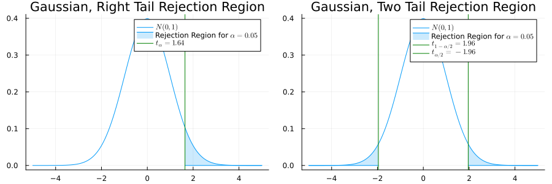
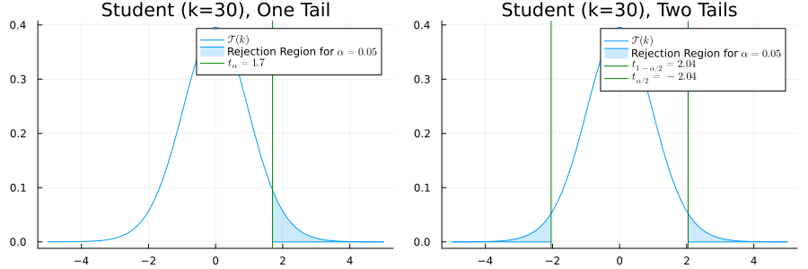
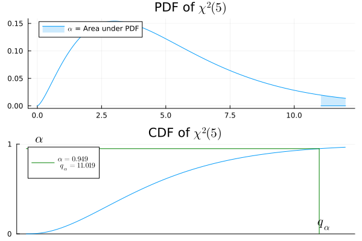
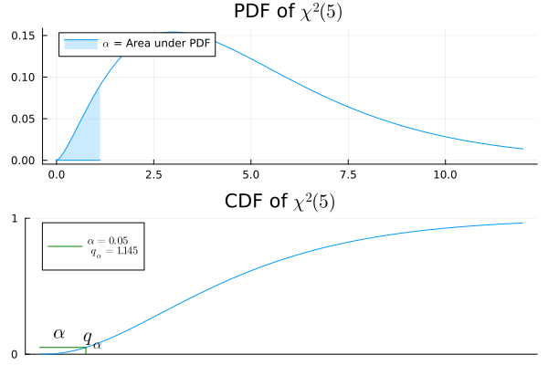

Populations Gaussiennes
Plan
- Une population gaussienne (une moyenne, une variance) :
- Test sur la moyenne avec variance connue
- Test sur la moyenne avec variance inconnue
- Test sur la variance avec moyenne inconnue
- Deux populations gaussiennes (deux moyennes, deux variances)
- Test sur la différence des moyennes avec variances connues
- Test sur les variances avec moyenne inconnue
- Test sur la différence des moyennes avec variances inconnues
Une Population Gaussienne
Test sur la Moyenne avec Variance Connue
. . .
\(X = (X_1, \dots, X_n)\), iid de loi \(\mathcal N(\mu, \sigma^2)\).
. . .
. . .
On veut tester la moyenne \(\mu = \mu_0\). Idée naturelle : utiliser \(\overline X\)
. . .
Mais \(\overline X \sim \mathcal N(\mu_0, \frac{\sigma^2}{n})\) sous \(H_0\). On normalise donc pour obtenir une \(\mathcal N(0,1)\)
Statistique de Test
. . .
Statistique de test :
\[\psi(X) = \frac{\sqrt{n}(\overline X-\mu_0)}{\sigma}\]
. . .
Sous \(H_0\), \(\psi(X) \sim \mathcal N(0,1)\)
C’est une statistique de test car \(\mu_0\) et \(\sigma\) sont connus ici. Ce ne serait pas le cas sinon.
Tests
. . .
Illustration
. . .

Exemple
Une machine remplit des bouteilles avec un volume nominal de \(\mu_0 = 500\) ml. Le volume de remplissage suit une loi \(\mathcal{N}(\mu, \sigma^2)\) avec \(\sigma = 5\) ml. Sur un échantillon de \(n = 25\) bouteilles, on observe \(\overline{x} = 498.1\) ml. La machine sous-remplit-elle ?
- \(H_0: \mu = 500\) vs \(H_1: \mu < 500\) (unilatéral gauche)
- Statistique de test : \(\tfrac{\sqrt{n}(\overline X - \mu_0)}{\sigma} = \tfrac{\sqrt{25}(498.1 - 500)}{5} = -1.9\)
- Seuil : \(t_{\alpha} =\)
quantile(Normal(0,1), 0.05) = -1.645 - \(-1.9 < -1.645\) : on rejette \(H_0\) au niveau \(5\%\)
- p-valeur :
cdf(Normal(0,1), -1.9) = 0.029
Test sur la Moyenne, Variance Inconnue
. . .
On observe \((X_1, \dots, X_n)\) iid \(\mathcal N(\mu, \sigma^2)\) où \(\mu\) et \(\sigma\) sont inconnus.
. . .
On fixe \(\mu_0\) comme une quantité connue
. . .
on veut tester si \(\mu = \mu_0\).
. . .
Problème de test multiple VS multiple :
\[ H_0: \{\mu_0,\sigma > 0\} \text{ ou } H_1: \{\mu \neq \mu_0,\sigma > 0\} \;. \]
. . .
\(\psi(X) = \frac{\sqrt{n}(\overline X-\mu_0)}{\sigma}\) n’est plus une statistique de test.
. . .
Idée : remplacer \(\sigma\) par son estimateur \[ \hat \sigma(X) = \sqrt{\frac{1}{n-1}\sum_{i=1}^n(X_i - \mu_0)^2} \; .\]
Test T de Student
. . .
\[ H_0: \{\mu_0,\sigma > 0\} \text{ ou } H_1: \{\mu \neq \mu_0,\sigma > 0\} \;. \]
. . .
Statistique du test T (de Student) : \[T(X) = \frac{\sqrt{n}(\overline X-\mu_0)}{\hat \sigma(X)}\]
. . .
\(T(X)\) est une statistique de test pivotale.
Sous \(H_0\), \(\psi(X)\sim \mathcal T(n-1)\)
Preuve
. . .
Prenons \(E = \operatorname{Span}(\mathbf{1})\) et \(F = E^\perp\). En posant \(Y_i = \frac{X_i - \mu}{\sigma}\) :
. . .
\[ \|\Pi_E Y\|^2 = n\overline{Y}^2 = \frac{n(\overline{X}-\mu)^2}{\sigma^2} \sim \chi^2(1) \]
\[ \|\Pi_F Y\|^2 = \sum_{i=1}^n (Y_i - \overline{Y})^2 = \frac{(n-1)\hat{\sigma}^2}{\sigma^2} \sim \chi^2(n-1) \]
et les deux sont indépendants, ce qui est précisément ce qu’il faut pour la statistique \(T\) de Student.
Loi de Student

Test sur la Variance, Moyenne Inconnue
. . .
On observe \(X=(X_1, \dots, X_{n_1})\) iid \(\mathcal N(\mu, \sigma^2)\). \(\mu\), \(\sigma\) sont inconnus. \(\sigma_0\) est fixé et connu.
On veut tester si \(\sigma > \sigma_0\), ou \(\sigma < \sigma_0\)
Test de Fisher Unilatéral Droit
. . .
\(H_0\) : \(\sigma \leq \sigma_0\), \(H_1\) : \(\sigma > \sigma_0\)
. . .
Statistique de test :
\(\psi(X) = \frac{1}{\sigma_0^2}\sum_{i=1}^n (X_i - \overline X)^2\) Wooclap
. . .
Test :
\(T(X) = \mathbf{1}\{\psi(X) > q_{1-\alpha}\}\) avec \(q_{1-\alpha}\) le quantile d’ordre \((1-\alpha)\) de \(\chi^2(n-1)\)
. . .
Région de rejet : \([q_{1-\alpha}, +\infty)\)
Région critique : \(\{(x_1, \dots, x_n) \in \mathbb R^n: ~ \psi(x_1, \dots, x_n) > q_{1-\alpha}\}\)
Propriété du Test de Fisher
. . .
Fixons \(t>0\). Sous \(H_0\), c’est-à-dire si \(\sigma \leq \sigma_0\)
\[P_{\mu, \sigma}(\psi(X) > t) \leq P_{\mu, \sigma_0}(\psi(X) > t) = P(\chi^2(n-1) > t)\]
\(~\)
. . .
En pratique :
\(q_{1-\alpha}\) : quantile(Chisq(n-1), 1-alpha)
. . .
p-valeur : 1-cdf(Chisq(n-1), xobs)
Preuve.
. . .
Sous \(P_{\mu,\sigma}\), la variable aléatoire \(Z = \frac{1}{\sigma^2}\sum_{i=1}^n (X_i - \bar{X})^2 \sim \chi^2(n-1)\).
. . .
\(\psi(X) = \frac{1}{\sigma_0^2}\sum_{i=1}^n (X_i - \bar{X})^2 = \frac{\sigma^2}{\sigma_0^2}\, Z.\)
. . .
D’où, \(P_{\mu,\sigma}(\psi(X) > t) = P\!\left(Z > \frac{\sigma_0^2}{\sigma^2}\, t\right)\\ \leq P(Z > t) = P(\chi^2(n-1) > t),\)
Illustration
. . .

Test de Fisher Unilatéral Gauche
. . .
\(H_0\) : \(\sigma \geq \sigma_0\), \(H_1\) : \(\sigma \leq \sigma_0\)
. . .
\(\psi(X) = \frac{1}{\sigma_0^2}\sum_{i=1}^n (X_i - \overline X)^2\)
. . .
\(T(X) = \mathbf{1}\{\psi(X) < q_{\alpha}\}\)
. . .
\(q_{\alpha}\) : quantile(Chisq(n-1), alpha)
. . .
p-valeur : cdf(Chisq(n-1), xobs)

Deux Populations Gaussiennes
Test sur les Moyennes, Variances Connues
. . .
On observe \((X_1, \dots, X_{n_1})\) iid \(\mathcal N(\mu_1, \sigma_1^2)\) et \((Y_1, \dots, Y_{n_2})\) iid \(\mathcal N(\mu_2, \sigma_2^2)\).
. . .
\(\sigma_1\), \(\sigma_2\) sont connus, \(\mu_1\), \(\mu_2\) sont inconnus
Problème de test :
\(H_0: \mu_1 = \mu_2 ~~~\text{VS} ~~~H_1: \mu_1 \neq \mu_2\)
. . .
On ne peut pas utiliser \(\mu_1\) ou \(\mu_2\) car ils sont inconnus
Idée
. . .
On veut utiliser \(\overline X - \overline Y\) puisque \(\mathbb E[\overline X] - \mathbb E[\overline Y] = \mu_1 - \mu_2\).
. . .
Mais quelle est \(\mathbb V(\overline X - \overline Y)\) sous \(H_0\) ?
. . .
\(\mathbb V(\overline X - \overline Y) = \sqrt{\frac{\sigma_1^2}{n_1} + \frac{\sigma_2^2}{n_2}}\)
. . .
On peut utiliser \(\sqrt{\frac{\sigma_1^2}{n_1} + \frac{\sigma_2^2}{n_2}}\) car \(\sigma_1\), \(\sigma_2\) sont connus ici.
Statistique de Test
. . .
Statistique de test :
\[ \psi(X,Y)=\frac{\overline X - \overline Y}{\sqrt{\frac{\sigma_1^2}{n_1} + \frac{\sigma_2^2}{n_2}}} \]
. . .
Sous \(H_0\), \(\psi(X,Y)\) suit une loi \(\mathcal N(0, 1)\)
Test
. . .
Test bilatéral :
\[ T(X,Y)=\mathbf 1\left\{|\psi(X, Y)| \geq t_{1-\alpha/2}\right\} \; , \]
. . .
\(t_{1-\alpha/2}\) est le quantile d’ordre \((1-\alpha/2)\) d’une loi gaussienne
. . .
On peut aussi tester \(\mu_1 < \mu_2\) ou \(\mu_1 > \mu_2\).
. . .
Pour cela, on retire la valeur absolue et on prend \(t_\alpha\) ou \(t_{1-\alpha}\).
Exemple
. . .
Objectif. Tester si un nouveau médicament est efficace pour réduire le taux de cholestérol
. . .
Expérience.
- Groupe A : \(n_A = 45\) patients recevant le nouveau médicament
- Groupe B : \(n_B = 50\) patients recevant un placebo
- On observe \((X_1, \dots, X_{n_A})\) iid \(\mathcal N(\mu_A,\sigma^2)\) et \((Y_1, \dots, Y_{n_B})\) iid \(N(\mu_B,\sigma^2)\) les taux de cholestérol. \(\sigma = 8\) mg/dL est connu par calibration.
Exemple (Suite)
. . .
Problème de test.
\(H_0: \mu_A = \mu_B\) VS \(H_1: \mu_A < \mu_B\)
Statistique de test. \(\psi(X,Y)=\frac{\overline X - \overline Y}{\sqrt{\frac{\sigma^2}{n_1} + \frac{\sigma^2}{n_2}}}\)
Loi sous \(H_0\) : \(\psi(X,Y) \sim \mathcal N(0,1)\)
Données. \(\overline X = 24.5\) mg/dL et \(\overline Y = 21.3\) mg/dL. D’où \(\psi(X,Y)= 5.5\).
p-valeur. \(\mathbb P(\psi(X, Y) \leq 5.5) \approx 1\) (\(P\) bien définie sous \(H_0\) !)
Conclusion. On ne rejette pas, et on n’utilise pas ce médicament !
Test sur les Variances, Moyennes Inconnues
. . .
On observe \(X=(X_1, \dots, X_{n})\) iid \(\mathcal N(\mu_1, \sigma_1^2)\) et \(Y=(Y_1, \dots, Y_{n_2})\) iid \(\mathcal N(\mu_2, \sigma_2^2)\). On suppose également que \(X\) et \(Y\) sont indépendants
. . .
\(\sigma_1\), \(\sigma_2\), \(\mu_1\), \(\mu_2\) sont inconnus ici
Problème de test :
\(H_0: \sigma_1 = \sigma_2 ~~~~ \text{ ou } ~~~~ H_1: \sigma_1 \neq \sigma_2\)
Idée
. . .
\(H_0: \sigma_1 = \sigma_2 ~~~~ \text{ ou } ~~~~ H_1: \sigma_1 \neq \sigma_2\)
. . .
On ne peut pas utiliser \(\sigma_1\), \(\sigma_2\) directement car ils sont inconnus.
. . .
On les estime :
\(\hat \sigma^2_1 = \tfrac{1}{n_1-1}\sum_{i=1}^{n_1}(X_i-\overline X)^2\) \(\hat \sigma^2_2 = \tfrac{1}{n_2-1}\sum_{i=1}^{n_2}(Y_i-\overline Y)^2\)
. . .
Ce sont des estimateurs sans biais puisque \(\mathbb E[\hat \sigma_1^2]= \sigma_1^2\) et \(\mathbb E[\hat \sigma_2^2]= \sigma_2^2\)
Statistique du Test F
. . .
La statistique du test F des variances (ANOVA) est \[ \psi(X,Y)=\frac{\hat \sigma^2_1}{\hat \sigma_2^2} = \frac{\tfrac{1}{n_1-1}\sum_{i=1}^{n_1}(X_i-\overline X)^2}{\tfrac{1}{n_2-1}\sum_{i=1}^{n_2}(Y_i-\overline Y)^2}\; . \]
Loi
. . .
Sous la loi donnée par les paramètres \(\mu_1, \mu_2, \sigma_1, \sigma_2\), \(\psi(X,Y)=\frac{\hat \sigma^2_1}{\hat \sigma_2^2}\) suit la loi \(\frac{\sigma^2_1}{\sigma_2^2} \mathcal F(n_1-1, n_2-1)\)
. . .
Cette loi est inconnue sous \(H_1\), mais sous \(H_0\), \(\sigma_1=\sigma_2\) donc c’est simplement \(\mathcal F(n_1-1, n_2-1)\)
Preuve
. . .
Puisque \(X_1,\dots,X_{n_1}\overset{iid}{\sim}\mathcal{N}(\mu_1,\sigma_1^2)\), on a \((n_1-1)\hat\sigma_1^2/\sigma_1^2\sim\chi^2(n_1-1)\), et de même \((n_2-1)\hat\sigma_2^2/\sigma_2^2\sim\chi^2(n_2-1)\), indépendamment. Alors
\[\psi(X,Y)=\frac{\hat\sigma_1^2}{\hat\sigma_2^2}=\frac{\sigma_1^2}{\sigma_2^2}\cdot\frac{\hat\sigma_1^2/\sigma_1^2}{\hat\sigma_2^2/\sigma_2^2}\\ =\frac{\sigma_1^2}{\sigma_2^2}\cdot\frac{\chi^2(n_1-1)/(n_1-1)}{\chi^2(n_2-1)/(n_2-1)}\sim\frac{\sigma_1^2}{\sigma_2^2}\,\mathcal{F}(n_1-1,n_2-1),\]
par définition de la loi de Fisher. \(\blacksquare\)
Test sur les Moyennes, Variances Égales
. . .
On observe \((X_1, \dots, X_{n_1})\) iid \(\mathcal N(\mu_1, \sigma_1^2)\) et \((Y_1, \dots, Y_{n_2})\) iid \(\mathcal N(\mu_2, \sigma_2^2)\).
. . .
\(\sigma_1\), \(\sigma_2\), \(\mu_1\), \(\mu_2\) sont inconnus, mais on sait que \(\sigma_1=\sigma_2\)
. . .
Problème de test d’égalité des moyennes :
\[ H_0: \mu_1 = \mu_2 ~~~~ \text{ ou } ~~~~ H_1: \mu_1 \neq \mu_2 \]
. . .
Formellement, \(H_0 = \{(\mu,\sigma, \mu, \sigma), \mu \in \mathbb R, \sigma > 0\}\).
Idée pour le Test sur les Moyennes
. . .
On utilise à nouveau \(\overline X - \overline Y\) (d’espérance \(\mu_1 - \mu_2\))
. . .
Quelle est sa variance (inconnue) ?
. . .
\(\sigma_1 = \sigma_2 = \sigma\) donc on a
\(\mathbb V(\overline X - \overline Y) = \sigma^2(\frac{1}{n_1} + \frac{1}{n_2})\)
. . .
On ne peut pas utiliser \(\sigma\) pour normaliser car il est inconnu !!!
. . .
Il faut l’estimer : \(\hat \sigma = \frac{1}{n_1 + n_2 - 2}\left(\sum_{i=1}^{n_1}(X_i - \overline X)^2 + \sum_{i=1}^{n_2}(Y_i - \overline Y)^2 \right)\)
Test d’Égalité des Moyennes (Variance Égale)
\(\hat \sigma^2 = \frac{1}{n_1 + n_2 - 2}\left(\sum_{i=1}^{n_1}(X_i - \overline X)^2 + \sum_{i=1}^{n_2}(Y_i - \overline Y)^2 \right)\)
On normalise \(\overline X - \overline Y\) : \[\psi(X,Y) = \frac{\overline X - \overline Y}{\sqrt{\hat \sigma^2\left(\frac{1}{n_1} + \frac{1}{n_2}\right)}} \sim \mathcal T(n_1+n_2 - 2) \; .\]
\(\psi(X,Y)\) est pivotale car \(\sigma_1 = \sigma_2\).
Égalité des Moyennes, Variances Inégales
On observe \((X_1, \dots, X_{n_1})\) iid \(\mathcal N(\mu_1, \sigma_1^2)\) et \((Y_1, \dots, Y_{n_2})\) iid \(\mathcal N(\mu_2, \sigma_2^2)\)
. . .
\(\sigma_1\), \(\sigma_2\), \(\mu_1\), \(\mu_2\) sont inconnus
. . .
Problème de test d’égalité des moyennes :
\[ H_0: \mu_1 = \mu_2 ~~~~ \text{ ou } ~~~~ H_1: \mu_1 \neq \mu_2 \]
Formellement :
\(\Theta_0 = \{(\mu,\sigma_1, \mu, \sigma_2), \mu \in \mathbb R, \sigma_1, \sigma_2 > 0\}\).
Test de Welch
\[\psi(X, Y) = \frac{\overline X - \overline Y}{\sqrt{\frac{\hat \sigma_1^2}{n_1} + \frac{\hat \sigma_2^2}{n_2}}}\]
- Wooclap \(\psi(X,Y)\) n’est pas pivotale
- Approximation gaussienne : \(\psi(X,Y) \approx \mathcal N(0,1)\) quand \(n_1, n_2 \to \infty\)
- Meilleure approximation : Test de Welch
Approximations Asymptotiques
Principe Général
. . .
On observe \((X_1, \dots, X_{n_1})\) et/ou \((Y_1, \dots, Y_{n_2})\) et on suppose que les observations sont indépendantes
. . .
\(\mathbb E[X_i] = \mu_1\), \(\mathbb E[Y_i] = \mu_2\), variances \(\sigma_1^2\) et \(\sigma_2^2\).
. . .
Même si les \(X_i\) ne sont pas des gaussiennes standard, on peut approcher par ex. \(\sqrt{\tfrac{n_1}{\sigma_1^2}}(\overline X - \mu_1)\) par une \(\mathcal N(0,1)\) en utilisant le TCL.
. . .
Intuition : les variables centrées et normalisées ressemblent toujours à des gaussiennes sous l’hypothèse d’indépendance.
. . .
On peut donc calculer des p-valeurs/régions de rejet approchées.
Test de Proportion
. . .
On observe \(X \sim Bin(n_1, p_1)\) et \(Y \sim Bin(n_2, p_2)\).
. . .
Ici, X n’est pas un vecteur, mais un entier !!
\(n_1\), \(n_2\) sont connus mais \(p_1\), \(p_2\) sont inconnus dans \((0,1)\)
. . .
\(H_0\) : \(p_1 = p_2\) ou \(H_1\) : \(p_1 \neq p_2\)
. . .
Idée : utiliser \(X-Y\), car \(E[X - Y] = p_1 - p_2\). Quelle est sa variance ?
. . .
notation : \(X/n_1\) est un estimateur de \(p_1\) donc on note \(\hat p_1 = X/n_1\).
Statistique de Test
\[ \psi(X,Y) = \frac{\hat p_1 - \hat p_2}{\sqrt{\hat p ( 1-\hat p)\left(\frac{1}{n_1} + \frac{1}{n_2}\right)}} \; .\]
- \(\hat p_1 = X/n_1\), \(\hat p_2 = Y/n_2\)
- \(\hat p = \frac{X+Y}{n_1+n_2}\) [Wooclap]
- Si \(np_1, np_2 \gg 1\) : \(\psi(X) \sim \mathcal N(0,1)\)
- On rejette si \(|\psi(X,Y)| \geq t_{1-\alpha/2}\) (quantile gaussien)
Exemple
. . .
Sondage : « faut-il augmenter les taxes sur les cigarettes pour financer une réforme de la santé ? »
. . .
Question : Les non-fumeurs sont-ils en moyenne plus favorables à l’augmentation des taxes ?
. . .
Observations :
| Non-fumeurs | Fumeurs | Total | |
|---|---|---|---|
| OUI | 351 | 41 | 392 |
| NON | 254 | 195 | 449 |
| Total | 605 | 154 | 800 |
Description
. . .
Description des données : on observe \(X\) et \(Y\) le nombre de non-fumeurs (resp. fumeurs) favorables à l’augmentation des taxes, parmi une population de \(n_1\) non-fumeurs (resp. \(n_2\) fumeurs).
. . .
Description alternative : on observe \((X_1, \dots, X_{n_1})\) et \((Y_1, \dots, Y_{n_2})\) où \(X_i\) (resp. \(Y_i\)) vaut \(1\) si et seulement si le non-fumeur \(i\) (resp. le fumeur \(i\)) souhaite une augmentation des taxes.
Formulation du Problème
. . .
Hypothèse : On suppose l’indépendance et que \(X \sim \mathcal B(n_1, p_1)\) et \(Y \sim \mathcal B(n_2, p_2)\) pour des probabilités inconnues \(p_1\), \(p_2\)
. . .
(Ou dans la description alternative) : \(X_i\), \(Y_i\) sont indépendants et suivent des lois de Bernoulli de paramètres \(p_1\), \(p_2\). On note \(X = \sum_{i=1}^n X_i\) et \(Y= \sum_{i=1}^n Y_i\).
. . .
Problème : On veut tester
\(H_0: p_1=p_2\) VS \(H_1: p_1 > p_2\)
Résolution
\(p_1\), \(p_2\) : proportion de non-fumeurs ou fumeurs favorables à l’augmentation des taxes
\(H_0\) : \(p_1=p_2\) ou \(H_1\) : \(p_1 > p_2\)
- \(\hat p_1 = \overline X= \approx 0.58\), \(\hat p_2=\overline Y= \approx 0.21\).
- \(\psi(X,Y)= \frac{\hat p_1 - \hat p_2}{\sqrt{\hat p ( 1-\hat p)\left(\frac{1}{n_1} + \frac{1}{n_2}\right)}} \approx 8.99\)
- \(\mathbb P(\psi(X,Y) > 8.99)\) =
1-cdf(Normal(0,1), 8.99)